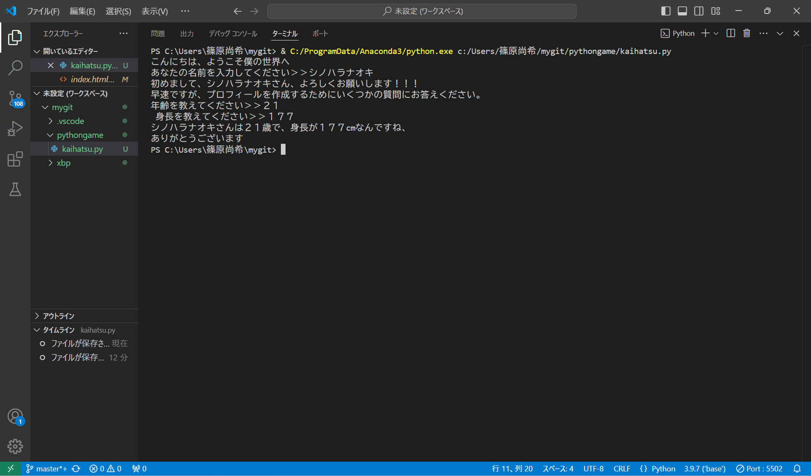
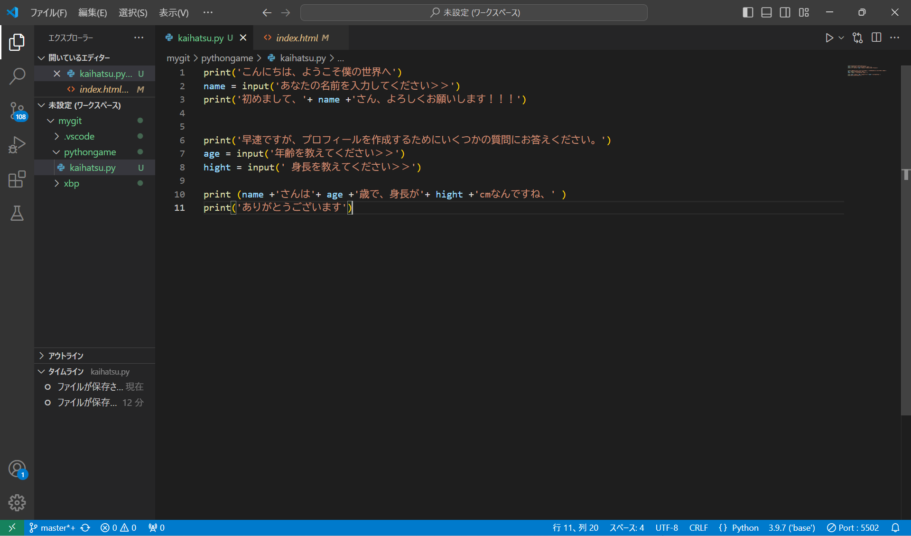

テーマ：Pythonを使ってゲームを作る
実践編
使える関数を使って導入部分の練習
 
簡単な関数のみだが、慣れないこともあり何回かエラーを出してしまった。 一か所でもミスが生じるとinput関数がうまく反応しないので見直しが大事だと感じた。今後はさらに複雑な関数も扱っていきたい。
パソコンが変わったからなのか「アカウント名とセキュリティ id の間のマッピングは実行されませんでした。」や「指定されたパスが存在しません」などのエラーが出てしまうので解決方法を調査中。。。
今後も出てくると思うので修正しながら進めていきたい。
次へ
個人プロジェクト4
戻る
個人プロジェクト2
TOP PAGE
HOME